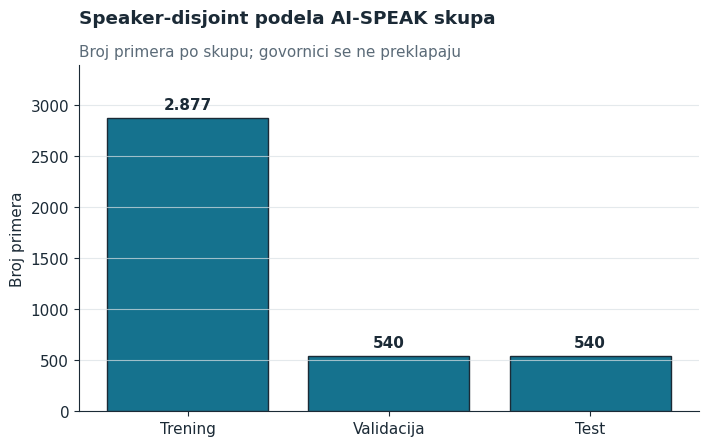
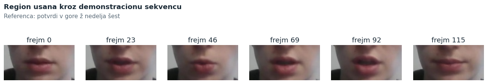
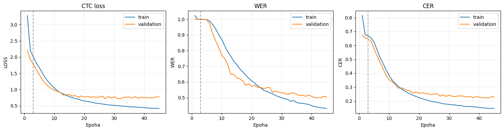
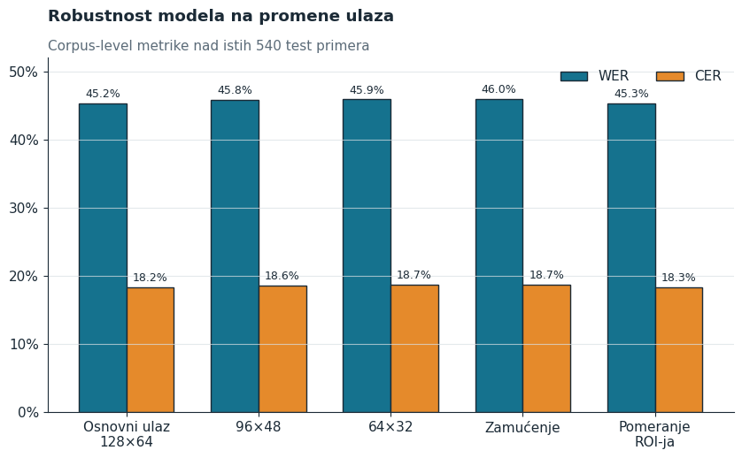
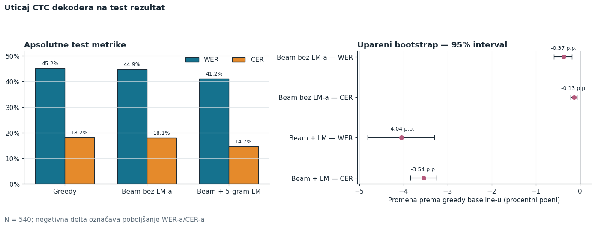
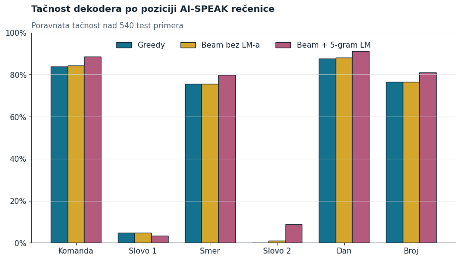
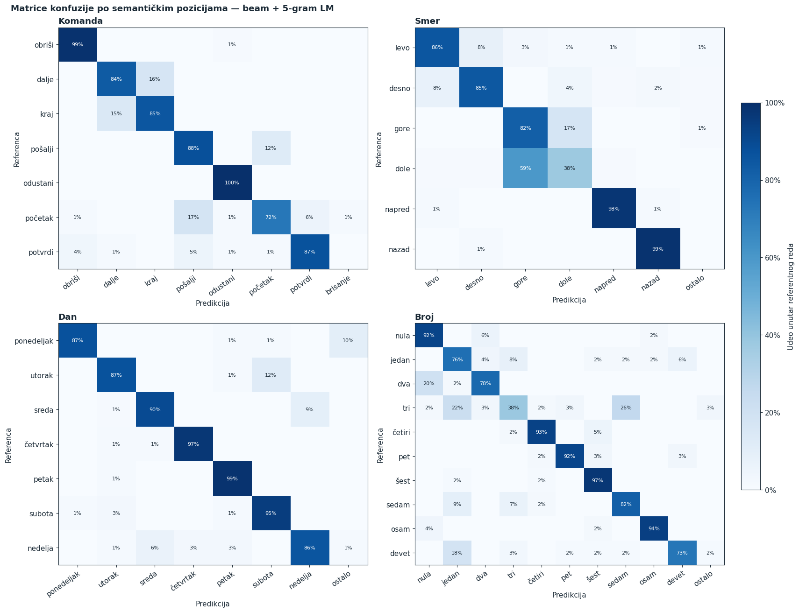
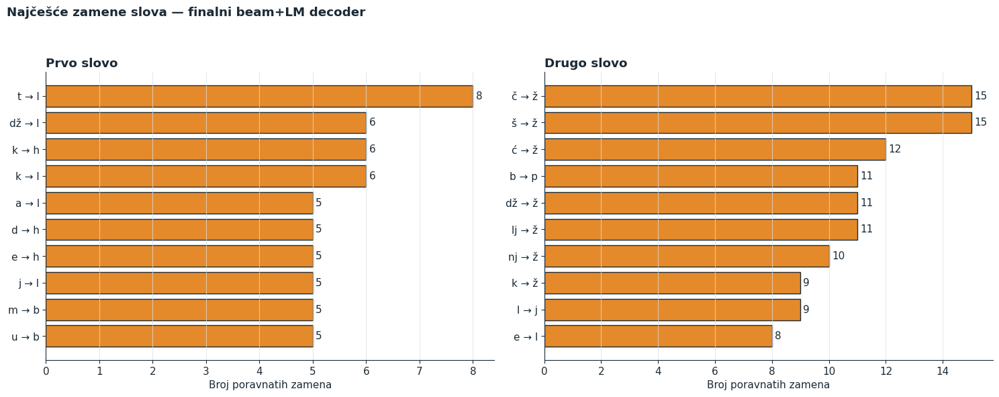

Sažetak—U radu je razvijen i ispitan sistem za vizuelno prepoznavanje srpskog govora iz video-snimka usana, bez korišćenja zvučnog signala. Polazna LipNet arhitektura, prethodno obučena na engleskom skupu GRID, prilagođena je srpskom alfabetu i sekvencama promenljive dužine, a zatim dodatno obučena na govorno nezavisnoj podeli dostavljenog AI-SPEAK podskupa. Obrada svakog snimka obuhvata detekciju i poravnanje lica, izdvajanje oblasti usana veličine 128 × 64 piksela i pretvaranje cele sekvence u tekst pomoću CTC kriterijuma. Na 540 test primera pohlepno dekodiranje dalo je WER od 45,25% i CER od 18,24%. CTC prefix beam search sa karakterskim 5-gramskim jezičkim modelom, obučenim isključivo na trening transkriptima, smanjio je WER na 41,20% i CER na 14,70%. Upareni bootstrap intervali potvrđuju da poboljšanje obe metrike nije posledica izbora test uzorka. Degradacija rezolucije, zamućenje i malo pomeranje isečka promenili su WER za najviše 0,71 procentni poen, ali bez posebne statističke procene tih razlika. Analiza po delovima iskaza pokazuje dobre rezultate za komande, dane, brojeve i smerove, dok izolovana slova ostaju glavni izvor grešaka. Dobijeni sistem potvrđuje opravdanost prenosa znanja za srpsko čitanje sa usana, ali nizak procenat potpuno tačnih rečenica pokazuje da još nije spreman za pouzdanu praktičnu primenu.
Ključne reči—čitanje sa usana, LipNet, srpski jezik, CTC, prenos znanja.
I. Uvod
Čitanje sa usana je zadatak prepoznavanja izgovorenog sadržaja samo na osnovu vizuelne informacije. Takav sistem može da dopuni prepoznavanje govora u buci, omogući tihu komunikaciju i podrži osobe kojima zvučni kanal nije dostupan. Istovremeno, zadatak je težak jer različiti glasovi mogu da proizvedu veoma sličan položaj usana, deo artikulacije nije vidljiv spolja, a izgled i način govora se razlikuju od osobe do osobe.
LipNet je među prvim modelima koji su čitanje rečenice sa usana rešavali neposredno, jednom neuronskom mrežom, umesto odvojenim prepoznavanjem pojedinačnih vizema i reči [1]. Prostorno-vremenske konvolucije izdvajaju promene izgleda usana, rekurentni slojevi povezuju informacije kroz vreme, a CTC kriterijum omogućava učenje bez anotacije svakog video-frejma [2]. Originalni model je razvijen za engleski skup GRID [3]; cilj ovog rada je provera koliko se takav vizuelni prikaz može preneti na ograničen skup srpskih iskaza.
Glavni doprinos rada je kompletna, govorno nezavisna evaluacija adaptiranog modela: od provere podataka i prenosa težina, preko dodatnog obučavanja, do ispitivanja otpornosti i tri načina dekodiranja. Posebno je analizirano gde sistem greši unutar šestodelne gramatike iskaza. Time se rezultat ne svodi na jednu prosečnu metriku, već pokazuje i koje vrste sadržaja model zaista razaznaje.
II. Model i kriterijum učenja
A. Arhitektura
Ulaz u mrežu je tenzor oblika B × 3 × T × 64 × 128, gde je B veličina paketa, a T broj frejmova. Tri 3D konvoluciona bloka uče lokalne prostorno-vremenske obrasce. Kanali se redom povećavaju na 32, 64 i 96, dok se prostorna dimenzija smanjuje do 4 × 8. Dobijena sekvenca prolazi kroz dva dvosmerna GRU sloja sa po 256 skrivenih jedinica u svakom smeru, pa svaki vremenski korak ima prikaz dimenzije 512. Linearni izlazni sloj daje verovatnoće za 29 CTC klasa: prazni simbol, razmak i znakove korišćene u srpskim transkriptima.
3 × T × 64 × 128
32–64–96
2 × 256
29 klasa
dekoder
Sl. 1. Tok informacija kroz adaptirani LipNet model.
Video-zapisi nemaju jednaku dužinu. Zbog toga su popunjeni vremenski koraci maskirani posle svakog konvolucionog bloka, a stvarne dužine sekvenci prosleđene su kroz oba GRU sloja u pakovanom obliku. Ovim se sprečava da veštački nulti frejmovi utiču na stanje rekurentne mreže. Dropout sa verovatnoćom 0,5 primenjen je u konvolucionom i rekurentnom delu.
B. CTC poravnanje i dekodiranje
CTC sabira verovatnoće svih dozvoljenih vremenskih putanja koje se nakon uklanjanja ponovljenih znakova i praznih simbola svode na isti transkript [2]. Za video x i ciljni tekst y minimizuje se negativna log-verovatnoća
LCTC = −log ∑π∈B−1(y) P(π | x).
Na izlazu su upoređena tri dekodera. Pohlepni dekoder u svakom frejmu bira najverovatniji znak. Prefix beam search zadržava 50 najboljih prefiksa i razdvaja putanje koje završavaju praznim i nepraznim simbolom. Završna varijanta dodaje karakterski backoff 5-gramski model sa add-k zaglađivanjem (k = 0,1), težinom jezičkog modela 1,0 i bonusom za reč 0,5. Jezički model vidi samo 2.877 trening transkripata; validacioni i test tekstovi nisu korišćeni za njegovo učenje.
III. Podaci i eksperimentalni protokol
A. Dostavljeni AI-SPEAK podskup
U eksperimentu je korišćen dostavljeni srpski podskup baze AI-SPEAK. Lokalna revizija pronašla je 3.957 uparenih video-zapisa i anotacija za 22 govornika. To nije isto što i celokupna javno opisana baza, koja sadrži srpske i engleske snimke i drugačiji broj govornika i iskaza [6]. Zbog toga se svi brojevi i zaključci u nastavku odnose isključivo na podskup koji je stvarno obrađen.
Svaka referentna rečenica sledi gramatiku sa šest semantičkih mesta: komanda – slovo – smer – slovo – dan – broj. Govornici su podeljeni pre učenja, pa se nijedan identitet ne pojavljuje u više skupova. Trening čini 16 govornika (spk01, 02, 04, 05, 07, 08, 09, 11, 12, 14, 15, 17, 18, 19, 20 i 21), validaciju spk10, 13 i 16, a test spk03, 06 i 22. Ovakva podela meri generalizaciju na ljude koje model nije video tokom obučavanja.
| Skup | Govornici | Uzorci | Udeo |
|---|---|---|---|
| Trening | 16 | 2.877 | 72,7% |
| Validacija | 3 | 540 | 13,6% |
| Test | 3 | 540 | 13,6% |
| Ukupno | 22 | 3.957 | 100% |

Sl. 2. Broj uzoraka u govorno nezavisnim podskupovima.
B. Priprema video-sekvenci
Snimci su dekodirani brzinom od 25 frejmova u sekundi. BlazeFace detektor [4] pronalazi lice, 68 karakterističnih tačaka određuje njegovu geometriju, a afina transformacija ga dovodi u kanonski položaj. Iz poravnatog lica za svaki frejm se izdvaja oblast oko usana i menja veličina na 128 × 64 piksela. Frejmovi se čuvaju kao JPEG sekvenca i pri učitavanju normalizuju na opseg [0, 1]. Slika 3 pokazuje da isečak prati usta tokom izgovora, dok ostatak lica ne ulazi u model.

Sl. 3. Primer vremenske promene izdvojene oblasti usana. Frejmovi pripadaju istom video-zapisu.
Tekst anotacija je normalizovan na mala slova u Unicode NFC obliku, a oznake tišine uklonjene su pre tokenizacije. Za svaki uzorak provereno je CTC ograničenje između dužine cilja i broja raspoloživih vremenskih koraka; svih 3.957 uzoraka bilo je validno. Provera paketa potvrdila je i stvarne dužine promenljivih video-sekvenci, umesto izvođenja iz popunjene širine paketa.
C. Prenos znanja i obučavanje
Polazne težine preuzete su iz javne PyTorch realizacije LipNet-a [5], obučene na skupu GRID. Preneta su 22 kompatibilna tenzora konvolucionog i rekurentnog dela. Samo težina i pomeraj završnog klasifikatora nisu preneti, jer srpska izlazna azbuka ima 29 klasa. Prve tri epohe učen je samo novi izlazni sloj; zatim je odmrznuta cela mreža. Korišćen je Adam sa različitim stopama učenja: 2·10−5 za osnovni deo i 10−4 za klasifikator.
| Maksimalan broj epoha | 45 |
| Warm-up izlaznog sloja | 3 epohe |
| Veličina paketa | 2 |
| Rano zaustavljanje | 5 epoha |
| Slučajno seme | 0 |
| Računarsko okruženje | NVIDIA L4 |
Najbolji checkpoint izabran je isključivo prema validacionom WER-u, sa CER-om i potpunim poklapanjem kao pomoćnim kriterijumima. Dobijen je u 43. epohi (indeks 42): validacioni gubitak iznosio je 0,7390, WER 49,72%, a CER 22,02%. Test skup je ocenjen samo tim izabranim checkpoint-om. Njegov SHA-256 otisak počinje sa 203c2707b5c3…, što jednoznačno vezuje sve naredne eksperimente za iste težine.

Sl. 4. Tok obučavanja: CTC gubitak i WER na trening i validacionom skupu. Isprekidana linija označava kraj troepohovnog warm-up perioda.
IV. Način evaluacije
Osnovne metrike su greška na nivou reči (WER) i karaktera (CER). Obe su računane zbirno nad celim korpusom: broj Levenštajnovih zamena, brisanja i umetanja podeljen je ukupnim brojem referentnih reči, odnosno karaktera. Ovakva definicija sprečava da kratke i duge rečenice dobiju isti uticaj samo zato što su pojedinačni uzorci. Prijavljen je i procenat rečenica koje su potpuno jednake referenci.
Za poređenje dekodera primenjen je upareni bootstrap sa 2.000 ponavljanja nad istih 540 test primera i 95-procentnim intervalima pouzdanosti [7]. Interval se računa za razliku metrike kandidata i pohlepnog dekodera; negativna vrednost znači poboljšanje. Hiperparametri beam search-a birani su na validacionom skupu, dok je test skup ostao zaključan do konačnog poređenja.
Otpornost vizuelnog ulaza proverena je bez ponovnog obučavanja: originalni ROI upoređen je sa smanjenjem na 96 × 48 i 64 × 32 uz vraćanje na 128 × 64, Gausovim zamućenjem i determinističkim pomeranjem isečka za četiri piksela vodoravno i dva uspravno. Sve varijante koriste isti checkpoint i pohlepni dekoder, pa razlike opisuju samo osetljivost ulaza.
V. Rezultati
A. Osnovni model i otpornost
Na test skupu od 540 do tada neviđenih snimaka, pohlepni dekoder ostvario je WER 45,25% i CER 18,24%. Razlika između te dve metrike pokazuje da predikcije često zadržavaju veći deo pravilnog zapisa reči, ali greška u nekoliko karaktera ipak čini celu reč netačnom. Nijedna rečenica nije bila potpuno tačna u ovoj varijanti.
Promene kvaliteta slike dale su iznenađujuće bliske rezultate. Najveći zabeleženi rast WER-a bio je 0,71 procentni poen kod zamućenja, a najmanji 0,09 poena kod pomeranja isečka. Rezultat sugeriše da model ne zavisi od sasvim oštre slike niti od piksel preciznog položaja usana. Ipak, za ove razlike nisu računani upareni intervali, pa ih treba čitati deskriptivno, a ne kao dokaz jednake performanse u svim uslovima.

Sl. 5. WER i CER pri promeni rezolucije, zamućenju i pomeranju oblasti usana. Niža vrednost je bolja.
B. Uticaj dekodera
| Dekoder | WER | CER | Potpuno tačno |
|---|---|---|---|
| Pohlepni | 45,25% | 18,24% | 0,00% |
| Beam, bez LM | 44,88% | 18,10% | 0,00% |
| Beam + 5-gram LM | 41,20% | 14,70% | 0,37% |
Sam beam search daje malo, ali dosledno poboljšanje: WER pada za 0,37 poena, uz 95% interval razlike od −0,59 do −0,19 poena. Dodavanje karakterskog jezičkog modela smanjuje WER za 4,04 poena, odnosno relativno za 8,94%, a CER za 3,54 poena. Intervali su [−4,81, −3,30] za WER i [−3,84, −3,26] za CER, pa oba isključuju nulu. Jezički model, dakle, pouzdano popravlja znakove i reči koje vizuelna mreža ocenjuje slično.

Sl. 6. Levo: apsolutne test metrike tri dekodera. Desno: upareni bootstrap intervali promene u odnosu na pohlepni dekoder.
Jedan od ta dva primera jasno pokazuje ulogu jezičkog konteksta. Za referencu „potvrdi v gore ž nedelja šest” pohlepni dekoder daje „potvrdi o gore nedelja šest” — prvo slovo je pogrešno, a drugo izostavljeno. Beam search sa jezičkim modelom vraća svih šest elemenata i dobija tačan iskaz. To je koristan primer korekcije, ali nije reprezentativan za većinu rečenica; zbog toga su zbirne metrike i analiza po mestima važnije od pojedinačnog uspeha.
VI. Analiza grešaka
Fiksna gramatika omogućava da se svaka predikcija poravna sa šest semantičkih mesta. Kod najboljeg dekodera komanda je tačna u 88,52% primera, dan u 91,30%, broj u 81,11%, a smer u 79,81%. Nasuprot tome, prvo izolovano slovo tačno je u 3,33%, a drugo u 8,70% primera. Reči sa više frejmova nude stabilniji vizuelni obrazac i jači jezički kontekst, dok kratko izgovoreno slovo mora da se razazna iz male vremenske razlike i često deli slične pokrete usana sa drugim slovima.

Sl. 7. Tačnost po mestu u iskazu. Jezički model najviše pomaže strukturisanim rečima, dok izolovana slova ostaju nestabilna.
Normalizovane matrice konfuzije na slici 8 otkrivaju i sistematske zamene. Komande su uglavnom dobro odvojene, posebno „odustani”, dok se „početak” češće meša sa drugim komandama. Kod smerova je „dole” najproblematičniji: u 38% primera je ispravno prepoznat, a u 59% zamenjen sa „gore”. Dani su najstabilnija grupa. Među brojevima se „tri” izdvaja kao težak slučaj, sa 38% tačnih predikcija. Ovi nalazi su u skladu sa vizuelnom sličnošću pojedinih izgovora i uticajem jezičkog modela, ali eksperiment ne razdvaja ta dva uzroka, pa se ne mogu tvrditi kao potvrđen mehanizam greške.

Sl. 8. Normalizovane matrice konfuzije najboljeg dekodera za četiri višeklasna mesta.

Sl. 9. Najčešće zamene u dva mesta predviđena za izolovana slova.
Analiza izolovanih slova dopunjuje isti zaključak. Greške nisu ravnomerno raspoređene: mali broj zamena javlja se znatno češće od ostalih, a pojedina slova nestaju iz predikcije. Karakterski model smanjuje ukupan CER i često vraća strukturu rečenice, ali pošto je učen na potpunim transkriptima može da favorizuje češće kombinacije. Za aplikaciju u kojoj su baš slova ključni podatak to predstavlja glavno ograničenje sadašnjeg sistema.
VII. Ograničenja i ponovljivost
Najvažnije ograničenje je obim podataka. Test obuhvata tri nova govornika i jednu strogo kontrolisanu gramatiku, pa rezultat ne opisuje slobodan srpski govor, razgovor u prirodnom okruženju niti širok raspon položaja glave i osvetljenja. Rodna, starosna i druga demografska struktura dostavljenog podskupa nije korišćena u analizi, zbog čega nisu ispitane razlike performansi među tim grupama.
Drugo ograničenje je zavisnost dekodera od poznate jezičke strukture. 5-gramski model nije video validacione ili test rečenice, što sprečava direktno curenje podataka, ali je treniran na istoj šestodelnoj gramatici. Njegov dobitak zato pokazuje vrednost konteksta u ovom domenu, a ne nužno generalizaciju na proizvoljan tekst. Potpuno poklapanje od 0,37% ostaje strogo upozorenje za upotrebu konačnog transkripta bez dodatne provere.
Za proverljivost su sačuvani spiskovi govornika, konfiguracija, definicija korpusnih metrika, predikcije svih 540 test uzoraka, 2.000 bootstrap ponavljanja i otisak checkpoint-a. Osnovni test WER iz eksperimenta otpornosti potpuno se poklapa sa rezultatom obučavanja. Automatske provere obuhvataju podatke, model, CTC, prenos težina, dekodere i izveštajne rezultate; svih 34 testa prolaze. Nepouzdani istorijski brojevi o odbačenim frejmovima nisu korišćeni u zaključcima.
VIII. Zaključak
Adaptirani LipNet uspešno uči korisnu vezu između pokreta usana i srpskog teksta, iako polazne težine potiču iz engleskog skupa. Govorno nezavisni test pokazuje da pohlepni model dostiže WER 45,25% i CER 18,24%. Uvođenjem CTC beam search-a i karakterskog 5-gramskog modela te vrednosti se popravljaju na 41,20% i 14,70%, sa bootstrap intervalima koji potvrđuju stabilno poboljšanje. Istovremeno, male promene rezolucije i položaja isečka malo menjaju zbirne metrike.
Najvažniji praktični nalaz nije samo najbolji WER, već velika razlika među delovima iskaza. Komande, dani, brojevi i smerovi prepoznaju se znatno pouzdanije od izolovanih slova. Sledeći korak zato treba da bude usmeren na više govornika i raznovrsnije snimke, ciljanu obradu slova, vizuelno-jezički dekoder koji ne potiskuje retke znakove i evaluaciju na slobodnijem srpskom govoru. Tek nakon toga ima smisla razmatrati sistem koji donosi odluku na nivou cele naredbe.
Reference
[1] Y. M. Assael, B. Shillingford, S. Whiteson i N. de Freitas, „LipNet: End-to-End Sentence-level Lipreading,” Proc. 31st AAAI Conf. Artificial Intelligence, 2017, str. 3349–3355. Dostupno: arXiv:1611.01599.
[2] A. Graves, S. Fernández, F. Gomez i J. Schmidhuber, „Connectionist Temporal Classification: Labelling Unsegmented Sequence Data with Recurrent Neural Networks,” Proc. 23rd Int. Conf. Machine Learning, 2006, str. 369–376. doi:10.1145/1143844.1143891.
[3] M. Cooke, J. Barker, S. Cunningham i X. Shao, „An audio-visual corpus for speech perception and automatic speech recognition,” J. Acoustical Society of America, vol. 120, br. 5, str. 2421–2424, 2006. doi:10.1121/1.2229005.
[4] V. Bazarevsky, Y. Kartynnik, A. Vakunov, K. Raveendran i M. Grundmann, „BlazeFace: Sub-millisecond Neural Face Detection on Mobile GPUs,” 2019. Dostupno: arXiv:1907.05047.
[5] VIPL Audio-Visual Speech Understanding, „LipNet-PyTorch,” GitHub repozitorijum, revizija 40209e0. Dostupno: github.com/VIPL-Audio-Visual-Speech-Understanding/LipNet-PyTorch (pristupljeno 25. 8. 2026).
[6] Faculty of Technical Sciences, University of Novi Sad, „AI-SPEAK Database,” opis baze. Dostupno: data.telekom.ftn.uns.ac.rs/ai-speak (pristupljeno 25. 8. 2026).
[7] B. Efron i R. J. Tibshirani, An Introduction to the Bootstrap. New York, NY, USA: Chapman & Hall, 1993.